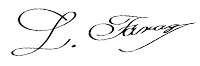

Jó napot kívánok, Faragó Lajos vagyok, tudós, szakértő az oftalmológia területén. Ezen az oldalon szeretném bemutatni önöknek életem legnagyobb eredményét, amelyért most jelöltek az Amerikai Szemegészségügyi Szakértők Társaságának díjára. Kidolgoztam egy módszert, amellyel bárki visszaállíthatja az elvesztett látásélességet, és mindössze 2 hónap alatt megszabadulhat a leggyakoribb szemproblémáktól.
Tudnia kell, hogy mindez veszélyes műtétek, drága eljárások, végtelen sorban állás a szakembereknél (akik szintén tehetetlenül feladják...) és mérgező vegyszerek lenyelése nélkül (melyek károsak a májra, a gyomorra és a vesére)... , és végül egy kisebb vagyon elköltése nélkül. Ha meg akarja ezt tenni, el kell olvasnia, amit mondani akarok.
Nem számít, hány éves, vagy mióta szenved látásproblémáktól. Nem számít, milyen tünetei vannak: rövidlátás, távollátás, asztigmatizmus vagy szürkehályog. Még akkor is, ha azt mondták önnek, hogy a kora miatt a látásváltozásai visszafordíthatatlanok, és fel kell készülnie a teljes vakságra... Tudnia kell, hogy 2 hónap elteltével a szemei 100%-ban egészségesek lesznek. Hosszú évekig!
Ez elfeledteti önnel a szemüveget és a drága és traumatikus látásjavító műtéteket. Az összes olyan probléma, mint például: nem látja a szöveges sorokat az újságban vagy a közúti táblákat az utcán, a múlté lesz. Képes lesz dolgozni és háztartási munkát végezni anélkül, hogy segítségre lenne szüksége. Végre képes lesz mindazokat a dolgokat megtenni, amelyeket eddig a gyengénlátás miatt nem tudott.
Olvassa kedvenc könyveit, kényelmesen tekintse meg a termékek árait, sétáljon alkonyatkor anélkül, hogy attól kellene tartania, nem talál haza. És mindezt azért, mert sikerült kifejlesztenem egy olyan innovatív formulát, amely segít helyreállítani a látást a lehető legteljesebb mértékben. Hogy csináltam?
A WHO legutóbbi felmérése szerint világszerte 2,2 milliárd ember látássérült. Közülük 1,1 milliárd teljesen vak. Ez annak ellenére van így, hogy a látásvesztésben és vakságban szenvedő emberek 90%-án lehet segíteni - a látásvesztés elleni hatékony eszközökkel. A legtöbbjük azonban elavult módszereket alkalmaz, amelyek nem hatékonyak és költségesek.
Sajnos édesanyámat is érintette ez a probléma. Először csak hunyorgott a tévéképernyőre, és azt mondta, hogy minden elmosódik a szeme előtt. Aztán nem tudta elolvasni a termékek összetételét a csomagoláson, amit apró betűkkel írtak. Szemüveget írtak fel neki, de folyton elhagyta valahol. És azzal viccelődött, hogy még a házban is végigtapogat mindent...
A legrosszabb az volt, hogy a romló látása életveszélyessé vált! Egy nap egy csésze forró teát tett az asztalra, és megégette a kezét. De ami a legjobban megdöbbentett, az egy másik eset volt. Ez volt az a pillanat, amikor úgy döntöttem, ideje cselekedni!
Soha nem fogom elfelejteni azt a napot, amikor felhívott a nagybátyám, aki egy másik városban él. Azt mondta, hogy édesanyám tévedésből az ő számát tárcsázta, amikor engem akart hívni. Azt is mondta, hogy haldoklik...
Elrohantam anyámhoz, és szörnyű állapotban találtam! Amikor megérkezett a segítség, kiderült, hogy anya tévedésből rossz vérnyomáscsökkentőt vett be, nagyon súlyos mérgezést kapott. Mert nem tudta elolvasni a nevüket a csomagoláson! Alig mentették meg...
Több napot töltöttem egy rémálomban. Nem volt világos, hogy anya felépül-e a mérgezésből. Amikor jobban érezte magát, elmentünk egy szakértőhöz a szemészet területén. Az egyetlen dolog, amit javasolt, egy műtét volt. Azt azonban nem tudta garantálni, hogy az ő korában a beavatkozás kézzelfogható eredményeket fog hozni. Kockáztatni a mama egészségét anélkül, hogy garantáltan segítene a műtét? Nem, nem egyeztem bele!
A saját kezembe kellett vennem a dolgokat. Hiszen annyira szerettem volna, hogy teljes életet élhessen anélkül, hogy az egészsége veszélybe kerülne! Hogy szeretett kertjében dolgozzon, vigyázzon az unokáira, találkozzon a barátaival. És mindezt segítség nélkül, tapogatózás nélkül. Azt gondoltam: "Ember, te egy tudós vagy!" Számos olyan anyag felfedezésében vett részt, amelyek különböző betegségek ellen küzdenek. Miért nem készítesz egy olyan terméket, amely segít helyreállítani a saját édesanyád látását?" Így hát elkezdtem kutatni...
Egy évig intenzív laboratóriumi vizsgálatokat végeztem. Kipróbáltam a hatóanyagok különböző kombinációit. Szeretném hangsúlyozni, hogy ezek mind 100%-ban természetesek és biztonságosak a szervezet számára. A hagyományos receptekből merítettem ihletet, és kombináltam őket a molekuláris biológia legújabb eredményeivel. A tudományos ismeretek, a természetbe vetett hit és egy kis szerencse gyorsan kifizetődött: előálltam egy egyedülálló makromolekuláris formulával.
Azonnal elkezdtem összeállítani a dokumentumokat a formulám széles körű kipróbálásához. 98%-os hatékonyságát az USA legnagyobb laboratóriumi központjai is megerősítették! Makromolekuláris formulám már a tesztelési fázisban is természetes módon segített helyreállítani önkéntesek ezreinek látásélességét.
Édesanyám elkezdte szedni a készítményemet, és körülbelül 3 hét után azt mondta, hogy a tárgyak már nem olyan homályosak a szeme előtt, és tisztábban lát. Ez nagyszerű jel volt: ez azt jelenti, hogy a formulám működik! De ez nekem nem volt elég, és könyörögtem anyámnak, hogy ne hagyja abba a kapszulák szedését. Az eredmények napról napra jobbak és jobbak lettek: nem fájt a feje attól, hogy megerőltette a szemét, miközben a televíziót nézi. Aztán azt mondta, hogy szemüveg nélkül is tökéletesen látja a szöveget az újságban. Mindez két hónappal azután, hogy elkezdte szedni a készítményt! Olyan boldog voltam! Arra, hogy végre legyőztem a progresszív vaksággal vívott csatát, akkor jöttem rá, amikor anyám azt mondta a boltban:
- Nem, nem fogom megvenni ezt a tejet. Túl magas a zsírtartalma, és hamarosan lejár a szavatossági ideje.
Értetlenül néztem rá: a címkén lévő betűk aprók voltak, tényleg ki tudta volna venni őket? Aztán nevetve azt mondta:
- Fiam, csodát műveltél! Nem is gondoltam, hogy egyszer majd olyan éles lesz a látásom, mint fiatal koromban. Nagyszerű terméket találtál ki, ami segít visszanyerni a látást! Hány embernek fogsz segíteni? El tudod képzelni, hogy hányan szenvednek körülötted, idősek, mint én, vagy akár fiatalabbak!
Eddig a látásélesség fokozatos csökkenése az életkor előrehaladtával elkerülhetetlennek számított. Ma, az én makromolekuláris formulám segítségével ez a folyamat nemcsak lelassítható, hanem vissza is fordítható.
Hadd magyarázzam el pontosan, hogyan működik az én szuperhatékony formulám a szemek egészségére. A folyamat meglehetősen összetett, de megpróbálom úgy elmagyarázni, hogy a laikusok is megértsék.
A látásfunkció a szemsejtek megfelelő oxigén- és tápanyagellátásától függ. Ezt a szerepet a látószervekben található erek és kis hajszálerek veszik át. Bár a szem nem egy nagy szerv, mindenütt kisebb-nagyobb erek szövik át. Így táplálják a retina artériái a látóideg és a retina egyes részeit. Ezek külön ágakra osztódnak, és hajszálerek sűrű hálózatát alkotják, amelyek a retina belső rétegeit és a látóideg belső részét táplálják. Aztán ott vannak az izomartériák, amelyek a szem összes izmának vérellátását biztosítják.
Ha a keringési rendszer úgy működik, mint a karikacsapás, akkor a látással sincsenek problémák. És ha mégis problémák lépnek fel (pl. a hosszan tartó számítógép előtti ülés vagy a negatív környezeti hatások miatt), a jótékony anyagokkal és vitaminokkal telített szemszövetek képesek regenerálódni és ellensúlyozni ezeket a problémákat. Ha azonban a keringés megszakad, a retina, a látóideg és a szemizmok sejtjei fokozatosan degenerálódnak.
Valójában minden látásprobléma egyetlen okra vezethető vissza: a szem nem megfelelő vérellátására.
Az én feladatom tehát az volt, hogy olyan készítményt találjak ki, amely segít helyreállítani a szem normális vérellátását. Ezt követően létrejön az egészséges mikrotápanyagokkal és vitaminokkal való telítettség a sejtek szintjén. Ennek eredményeképpen a sejtek képesek lesznek regenerálódni, a sejtek anyagcseréje normalizálódik, és megkezdődik az önregeneráció folyamata. Kifejlesztettem egy makromolekuláris formulát az intenzív regenerációhoz. Az nevet adtam neki.
Az egyedülálló formula lehetővé teszi a jótékony anyagok azonnali eljuttatását a látószerv sejtjeihez, és beindítja a látószervek vérellátásának folyamatát. A retina, a látóidegek és a szemizmok sejtjei ezután sejtszinten megkezdik a látás megújulásának folyamatát. Ezt követően a látás 100%-ban helyreállhat. Egy 2 hónapos kúra (21 nap után érezhető hatással) elegendő a látásélesség helyreállításához és a jövőbeli látásromlás megelőzéséhez. A lehető legtermészetesebb, mellékhatások nélkül!
12 dpi rövidlátás, ami szürkehályog kialakulásához vezetett
2 hónapos kúra után: látás teljesen helyreállt, szürkehályog tünetei nem észlelhetők
Eddig úgy tűnhet, hogy ez egy csoda. Ezt a tényt azonban megerősíti édesanyám esete és az a 14 000 ember, akiknek már sikerült visszanyerniük a látásukat a módszeremnek köszönhetően. Továbbá a makromolekuláris formula hatékonyságát a dallasi American Vision laboratórium minden kétséget kizáróan bizonyította. Ez egy világszínvonalú felfedezés, amely kivívta a szemészet és a neurológia legjobb szakértőinek elismerését és csodálatát. Továbbra is kapok elismerő leveleket az emberektől, akik megköszönik, hogy megmentettem őket a vakságtól; ez a fő oka annak, hogy boldog és büszke vagyok erre a felfedezésre.
Vagy továbbra is szenvedhet attól, hogy szemüveget kell viselnie, vagy remegni a félelemtől a szemműtét előtt. A mérgező vegyi anyagokkal is tönkreteheti az egészségét, és tudja, hogy ezek csak rövid időre odázzák el a látásproblémákat... De miért, amikor én egy gyors, egyszerű és olcsó módszert kínálok, amely segít visszanyerni a korábbi látását, minden gond nélkül? Mindössze 2 hónapra van szüksége, hogy elvégezze az kúrát, és csatlakozzon ahhoz a 14.000 elégedett használóhoz, akik már legyőzték az időskori és örökletes szemproblémákat, és most teljes életet élnek szemüveg vagy lencse nélkül!
Az használatával mindössze 2 hónapon belül helyreállíthatja látását. Különben nem kockáztat semmit! Makromolekuláris formulám nemzetközi elismerés gyanánt, megkapta a tekintélyes hármas garanciáját: eredetiség, minőség és elégedettség.
1. Eredetiség garanciája: a makromolekuláris készítmény olyan erős anyagokon alapuló formulát használ, amely segít regenerálni a látószerveket, és megvédi őket a negatív külső hatásoktól. Hatékonyságát tesztek és tanúsítványok igazolják. Ez egy innovatív formula, amelyet számos ország tudósai is jóváhagyták. Így biztos lehet benne, hogy eredeti terméket kap, amely csak ezen a weboldalon keresztül érhető el.
2. Minőséggarancia: a fejlett makromolekuláris formula gyártási folyamatának köszönhetően az megfelel a legmagasabb minőségi követelményeknek. Az Ön egészségét és jólétét szem előtt tartva, a hatóanyagok koncentrációja úgy lett kiválasztva, hogy 100%-ban biztonságos legyen egészsége szempontjából. Mindezt azért, hogy a hatása megfeleljen elvárásainak.
3. Elégedettségi garancia: számos fogyasztói teszt megerősíti az kapszula fokozott hatékonyságát. Ezen eredmények alapján a terméket világszerte elismerték a szakértők, akik ajánlják azt betegeiknek. Meggyőződésük, hogy az kapszula segítségével jelentősen javíthatja látását, és megakadályozhatja annak romlását, méghozzá mindössze 2 hónap alatt.
Az Egyesült Államok és Japán nagy gyógyszeripari vállalatai szó szerint harcolnak a makromolekuláris formulám szabadalmáért. Ha eladom, a készítmény az egész világon elérhető lesz, de minden bizonnyal nem ilyen áron.
Mielőtt ez megtörténne, úgy döntöttem, hogy elérhetővé teszem Magyarországon az terméket egy akció keretében, akár 50%-os kedvezménnyel. Mindezt azért, hogy hazámban minél több embernek segítsek egyszer s mindenkorra megszabadulni a látásproblémáktól.
Ezért kérem önöket, hogy éljenek ezzel a lehetőséggel! A kedvezményes klubból való rendelés egyszerű. Nem kell pénzt utalnia vagy kártyával fizetnie ahhoz, hogy megkapja az . Mindössze annyit kell tennie, hogy kitölti az űrlapot, ez nem tart tovább 2 percnél. És néhány napon belül megkapja a csomagot, amelyért utánvéttel kell fizetni.
Köszönöm, hogy időt szánt arra, hogy elolvassa a bejegyzésemet. Jó egészséget kívánok az új életéhez, amelyben élvezni fogja, hogy mindent láthat, közel és távol... Mindössze 2 hónap alatt képes lesz olvasni, tévét nézni hunyorgás nélkül, varrni és vásárolni anélkül, hogy szemüveget kellene hordania!
Tisztelettel, Lajos Faragó
*Gyógyszernek nem minősülő termék
*A készítmény hatása az egyéni tényezőktől függ
*Használat előtt kérjük, figyelmesen olvassa el a tájékoztatót
©